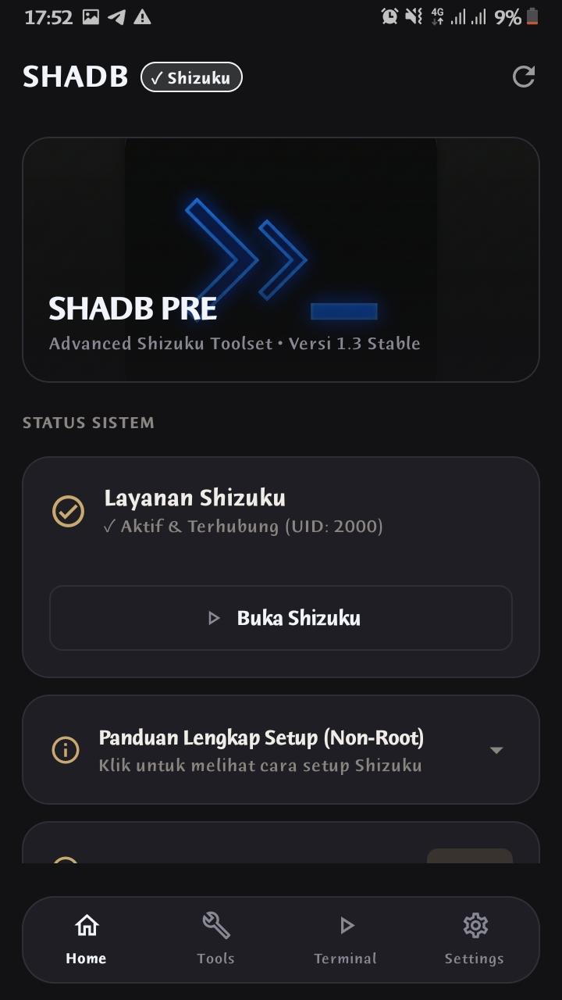
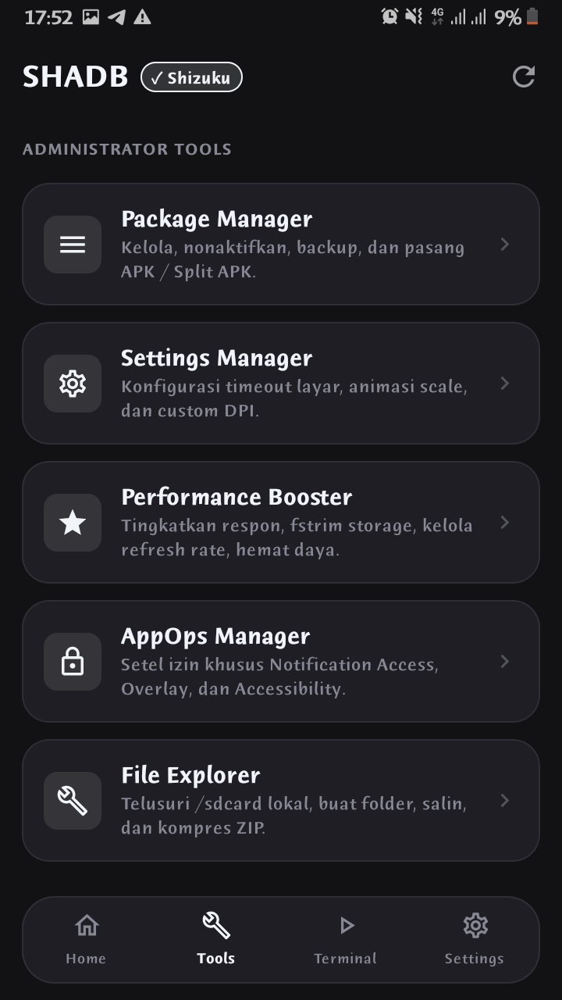
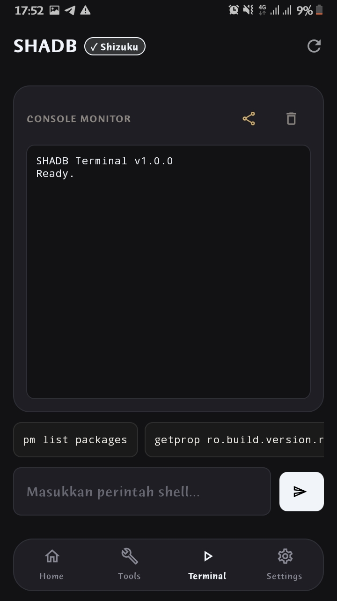
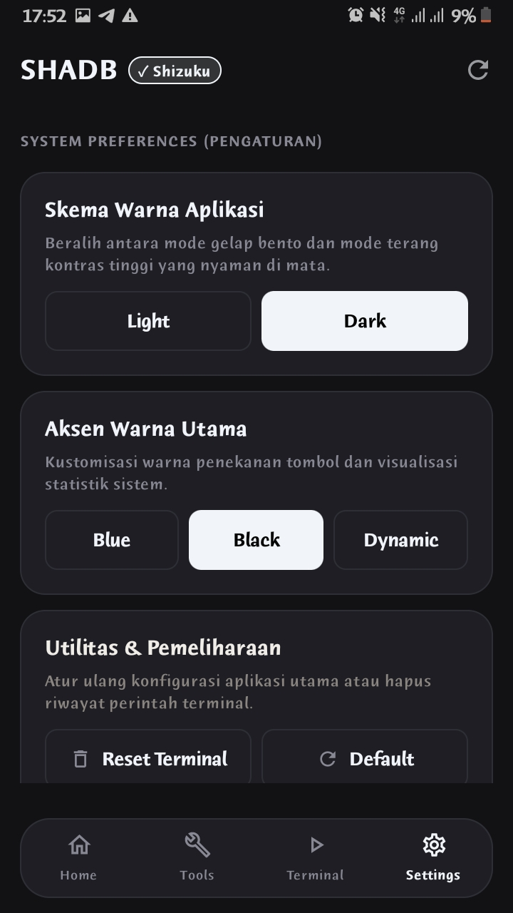

non-root · shizuku
SHADB membuka akses tingkat sistem lewat Shizuku — bekukan aplikasi, bersihkan bloatware, atur izin, dan kelola file, semua dari satu konsol. Aman, efisien, tanpa iklan.
$ package-manager
Bekukan, nonaktifkan, copot, backup, dan pasang APK / split APK. Kelola izin aplikasi sistem maupun pengguna.
$ debloater --auto
Bersihkan bloatware bawaan merk secara otomatis — Samsung, Xiaomi, Oppo, Vivo, Realme, dan lainnya.
$ settings-manager
Atur skala animasi, durasi screen timeout, dan densitas layar (DPI) secara langsung.
$ perf-booster
Tingkatkan respons sistem, fstrim storage, kelola refresh rate, dan hemat daya.
$ appops --manage
Setel izin khusus seperti Notification Access, Overlay, dan Accessibility untuk setiap aplikasi.
$ file-explorer
Navigasi sandbox aplikasi & shared storage. Buat folder, salin, dan kompres ke ZIP.
$ apk-analyzer · automation-engine
Bedah file APK untuk melihat signature, hash, aktivitas, dan izin — lalu picu shell script kustom otomatis saat boot, saat cas, atau saat Wi-Fi berubah.
Antarmuka gelap, ringkas, dan langsung pada intinya —.




SHADB
Butuh Shizuku aktif. Tidak perlu root, tidak ada iklan.
⤓ Unduh APKAndroid 10+ · Non-root · ~ a few MB